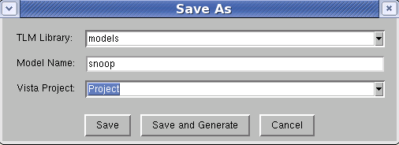

Working with Tables
When using Vista's modeling tables (for example, Ports or Policies), keep in mind that:
- You can select a row by clicking on the selection area at the left end of the row, and then Cut/Copy/Delete it.
- The Paste function is available for a cut or copied row within same type of table.
Creating the Model Interface
To create a model interface:
- Do one of the following:
- On the main Vista toolbar, click New
- Select Modeling > Create New Model in the menu bar
- In the object browser, select an object from the Generic Library to customize, and open it.
The Vista modeling window appears:
Figure 7‑10.
Vista's Modeling Window
- Select File > Save as, or click the Save toolbar icon.
The Save As dialog opens:
Figure 7‑11.
Saving a Model in Vista

- Specify a name for the new model. (See Format for Legal Identifiers.)
TLM Library - specify or select the library (models folder) in which to place the Model
Model Name - an identifying name for the Model
(optional) Vista Project
- Define ports for the model. At least one port should be defined for a valid model interface. Then click Save, or Save and Generate (to save the model and generate files).
The new model will appear in the object browser under the target library.
- Proceed to specify Ports, Parameters and Registers as described below.